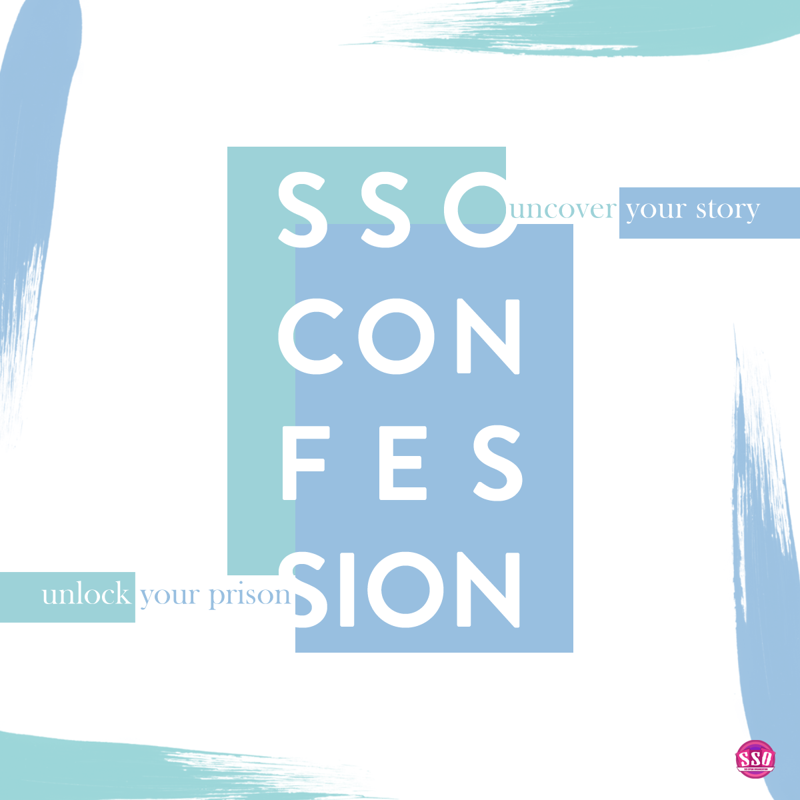
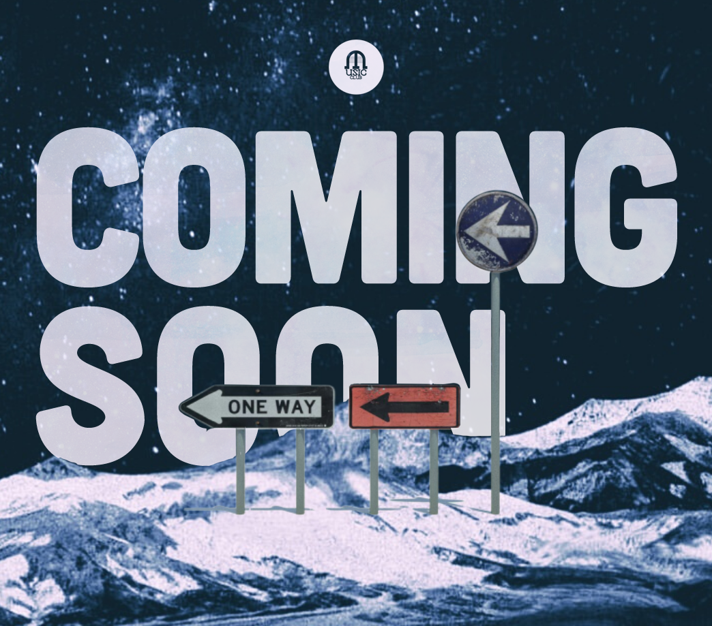
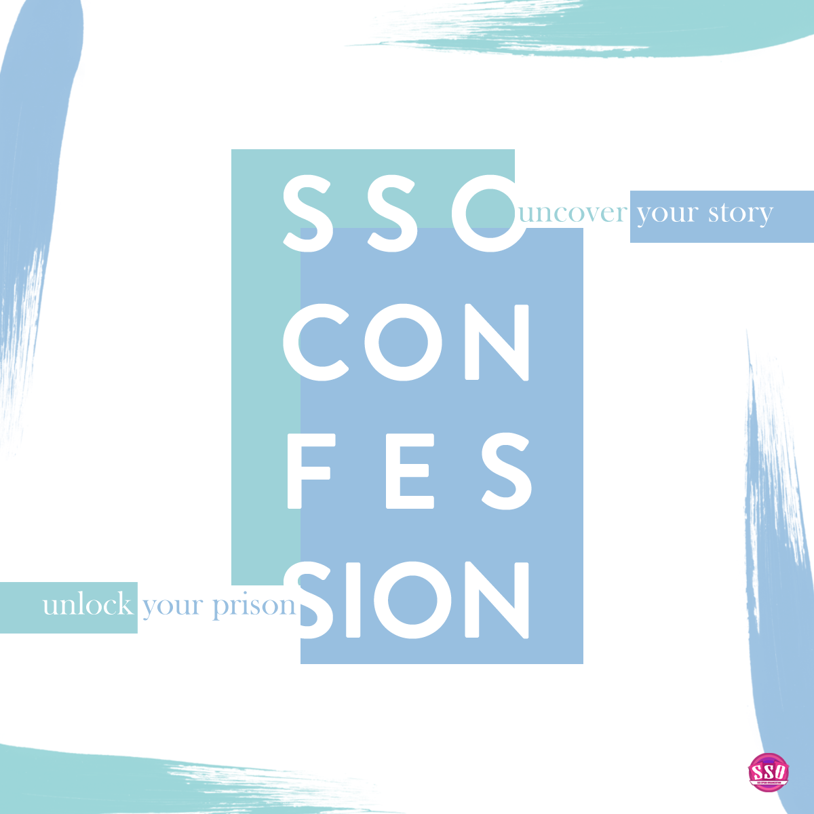
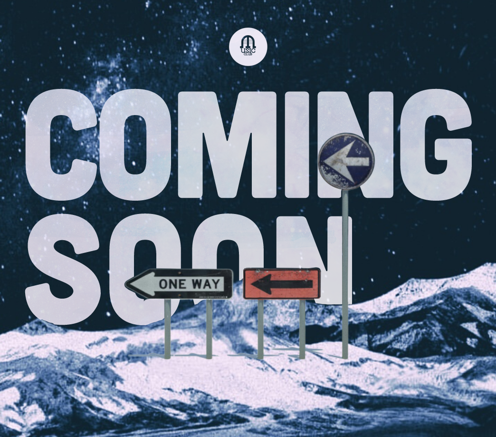

My
Profile
A full stack developer with a passion in web and mobile development.
I like to push myself and explore the unknown. Currently, my interest is in Machine Learning/AI and data analysis.
That is who I am. A do-er. A developer. A challenger.
A developer
Web dev experience with React, JavaScript, C# ASP.NET, and Python / Flask.
Android mobile development with Java and Kotlin. Knowledge of cross-platform languages such as Flutter and React Native.
Competitive coding with C++, Pascal, and Python. Background in UX/UI design and graphic design.
A data enthusiast
Work experience in Computer Vision with a growing interest in ML.
Ability to write business queries with SQL and Python scripts. Able to handle complex data such as videos and GIS.
Working knowledge of data manipulation in Python and data visualization using Matplotlib or Excel.
And a great team player
Experience working in fast-paced environment with start-ups and cross-functional teams.
A result-driven and self-motivated and fast learner.
Work regularly with Agile Development and Git Version Control.
Project
Highlights
Python Chatbot
A Python chatbot with 2 personalities which uses Regular Expression and dictionaries to create automatic conversations. Read more...
Text-based Adventure Game
A Python game with ASCII maps, training sessions, level systems, and randomized battles. Read more...
UCare
A web app which provides the seniors a friendly platform to read news, search for aid, and train their technical skills. Read more...
QR Reading App
An Android application that can read QR codes from the camera of a local device. Read more...

 



Like what you see?
I offer freelance services!
- Wedding Services: Save the Date, Invitations, Websites
- Data Analyst: Annotating, labeling, or anything data related
- Contract work: UX/UI redesign, mobile or web development